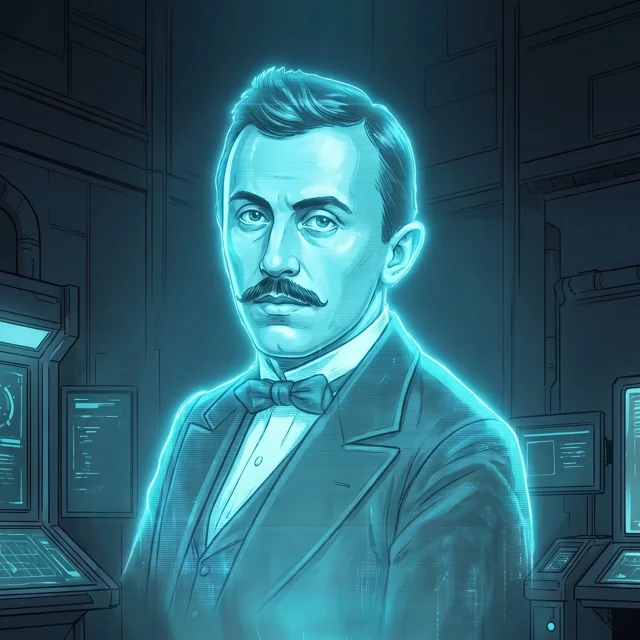

📡 SZVETI: A naplód ebben a böngészőben tárolódik — nem küldünk sehova semmit, és a tanárod sem látja. Ha másik gépen vagy telefonon folytatnád, alul készíts napló-kódot, és illeszd be a másik eszközön.
🔰
Újonc
0 XP
0
📗 teljesített tananyag-egység
0
🎯 megoldott gyors kérdés
0
✏️ kipipált feladat
0
🛰️ teljesített terepküldetés
Jelvényfal 0 / 0
Minden 100%-ra teljesített témakör egy küldetés-jelvényt ad. A halvány pajzsok még megszerezhetők — kattints rájuk, és folytasd a küldetést.
Haladás témakörönként
Betöltés…
Napló-kód: átvitel másik eszközre
A kód a teljes haladásodat tartalmazza. Készítsd el itt, másold ki, és a másik eszközön ugyanezen az oldalon illeszd be, majd nyomd meg a Napló betöltése gombot.
Beállítások
Ez a kapcsoló felülírja a rendszered
„mozgás csökkentése" beállítását is.